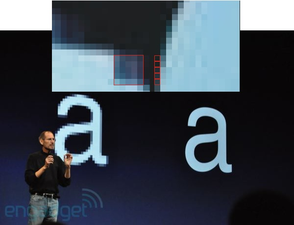
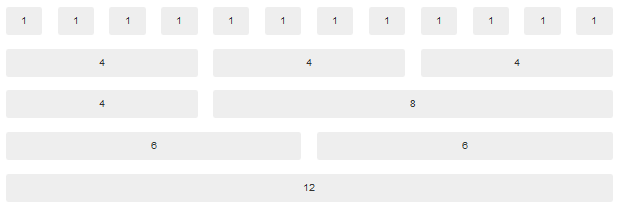

Responsive Web Design
Do I need it? How do I build it?
Presented by Peter Traeg / @ptraeg
About Me:
Peter Traeg
Solutions Architect, Universal Mind
iOS, Android, and Web Developer
Slides / Code: http://traeg.org
Twitter: @ptraeg
About Universal Mind:
What are we going to cover?
- Responsive design - why do I need it?
-
Three major components of responsive design:
- Responsive Layout
- Responsive Images
- Responsive Content
-
Resources for:
- Learning
- Development Tools
Why do I need it?
It's not just a desktop world anymore
Your content ...
-
On many devices:
Explosion of screen resolutions and ratios:
High Resolution (Retina) Displays
{kind=link}
Responsive doesn't just mean layout
-
Responsive means performance
People on low-bandwidth connections still expect pages
to load in 2 or 3 sec
Responsive Means Revenue
O'Neil Clothing:
-
iPhone / iPod Users:
- Conversions increased 65.71%
- Transactions up 112.5%
- Revenue increased 101.25%
-
Android Users:
- Conversions increased 407.32%
- Transactions up 333.33%
- Revenue increased 591.42%
Responsive Design Examples
History / Learnings Of Responsive Web Design
Responsive Design:
The Beginning
Ethan Marcotte - A List Apart - Responsive Web Design
May 25, 2010
Key points from that article
- A single site to meet multiple needs: No desire to create an iPhone, an iPad web site, etc. How many sites can you maintain?
- Fluid grids
- Flexible images
- Media queries
Mobile first design
Luke Wroblewski:
Design from the core needs of a mobile user first. Then augment that experience as more screen real estate becomes available.
Basic Concepts: Media Queries
Commonly used to detect browser width, device-width,
and pixel density
But you can use it for so much more ...
- orientation - portrait or landscape
- aspect-ratio - 16:9 or 4:3
- height - browser window height
- device-height - device screen height
- media - screen or print
Table of media features
A simple media query in CSS
@media screen and (min-width:480px) {
⋮ one or more rule sets…
} Note that multiple conditions can be tested and media features prefixed with min- or max-
Another media query example
@media screen and (min-width: 45em) {
.mindshare-listings, .news-listings {
width: 50%;
float: left;
position: relative;
border-right: 1px dashed #d9d9d9;
padding-right: 1.5em;
margin-top: 0.5em;
}
}
Loading stylesheets based on media features
@import url(/medium-width.css) screen and (min-width:800px) and (max-width:1280px);
Viewports: adapting to mobile screen sizes
The viewport meta tag
Without this most mobile browsers will use a screen width of 980px.
Controlling viewport scale
Min / Max scale
Generally preventing user scaling of your page should be avoided, but is sometimes used to with Mobile Safari to prevent the page zooming in when you rotate to landscape orientation.
Beware display:none
.sideBarContent {
background-image: url(images/golden_gate_800.jpg);
}
/* Responsive section */
@media screen and (min-width:480px) and (max-width: 800px) {
.sideBarContent {
display: none;
}
}
Even if the screen size causes the display:none to be active remember that all the content in that container will still be fetched (images, etc.). It just won't be displayed. This is an issue for mobile users if your page contains lots of content that will be hidden for mobile users.
What to do about IE?
Media queries are not supported
prior to IE9
Conditional comments
Load a style sheet that would normally be used for desktop browsers.
Use Respond.js
Adds limited media query support for browsers that don't support them.
@media screen and (min-width: 480px){
...styles for 480px and up go here
} Obviously this adds some overhead as the JS file must be loaded and the CSS file parsed before IE can continue. Conditional comments may be more performant, if not less flexible.
More techniques available on Smashing Magazine.
Media Query Access from Javascript
Test media queries from within Javascript
if (window.matchMedia("(min-width: 400px)").matches) {
/* the view port is at least 400 pixels wide */
} else {
/* the view port is less than 400 pixels wide */
}
Or use properties like
window.innerWidth and window.devicePixelRatio
Support: window.matchMedia is supported in IE10 and later.
Responsive Layouts
- Proportional Sizing - percentage based layout
- Introduction of additional elements as screen real estate increases. Often referred to as 'adaptive' content.
- Examples:
Responsive Grids

Most responsive grid systems require all columns to add up to 12.
Responsive Frameworks
The following frameworks all offer a responsive grid:
- Twitter Bootstrap
- Zurb Foundation
- 320 and Up now called Rock Hammer
Twitter Bootstrap 3.0 Responsive Grid
Bootstrap size breakpoints
| Extra small devices
Phones (<768px) |
Small devices
Tablets (≥768px) |
Medium devices
Desktops (≥992px) |
Large devices
Desktops (≥1200px) |
|
|---|---|---|---|---|
| Grid behavior | Horizontal at all times | Collapsed to start, horizontal above breakpoints | ||
| Max container width | None (auto) | 750px | 970px | 1170px |
| Class prefix |
.col-xs-
|
.col-sm-
|
.col-md-
|
.col-lg-
|
| # of columns | 12 | |||
Page Layout with Bootstrap 3
An example page layout using Bootstrap 3 grids:
- Use of visible-md, visible-sm, etc. to show content selectively
- Changing the proportion of space between the left navigation and the main content as different breakpoints are reached.
Responsive Page Layout Without Bootstrap
@media screen and (min-width: 45em) {
.mindshare-listings, .news-listings {
width: 50%;
float: left;
position: relative;
border-right: 1px dashed #d9d9d9;
padding-right: 1.5em;
margin-top: 0.5em;
}
}
Flexbox for responsive layout
- FlexBox - HTML5 flexible boxes for horizontal and vertical layout with weights (flex-grow:/flex-shrink) for justified content.
- Supported in IE10 and pretty much everything else.
-
Example 3-column layout using Flexbox
- Breakpoint at 600px for "aside" content to flex
- Breakpoint at 800px for "main" content to flex
Other techniques for responsive layout
- CSS Columns: Number of columns adapt to browser width - example. Supported only in IE10, and recent WebKit and Firefox releases.
- Grid Layout: - Supported only on IE10, but is in beta for WebKit and Firefox as well.
Responsive Images
- Fluid images for varying widths
- Loading higher resolution images for high DPI devices
Responsive Images and Art Direction
Sometimes just loading a different size image isn't enough
Responsive Image DPI in CSS
The following techniques involve using CSS to swap the background-image url based on the device DPI.
- Swapping an image based on a media query
- Swapping images using -webkit-image-set(). Note that support of this is limited to Safari 6+ and Chrome 21+ at this time.
Picture Element
Proposal of: RICG - Responsive Images Community Group

- Not yet implemented on any browsers
- But a polyfill to do nearly the same thing is ....
Picturefill Polyfill

Picturefill for more complex queries
srcset: A Picture Element Alternative

- srcset was originally proposed by Apple as it follows a similar syntax to the -webkit-image-set() method.
- Support for srcset is just now appearing in early beta builds of Webkit.
Meanwhile: srcset-polyfill

- Extends srcset support IE8+
- Note the number 100w in this case refers to the max-width
- Browsers aggressively fetch ahead the file in the "src" attribute is likely to be fetched while the Javascript is loading. Put small images in this default attribute or leave the src attribute off entirely.
- Srcset Polyfill Github repo
Other solutions
These solutions have a server based component to deliver the image file at the proper resolution.
- Adaptive Images - Javascript and PHP to detect screen size and DPI and serve images.
- ReSRC - Images are pulled through this 3rd party serivce.
Adaptive Images
- Easy to set up: Drop in a script, set up a .htaccess file, and add a PHP script to make regular image tags responsive.
- Aggressive fetching of img content might result in the images being fetched before the cookie is set.
-
Additional implementations available for:
ReSRC Responsive Image Service
- Hosted solution. You have to pay for this!
- Supports image edits.
- Avoids the aggressive image fetch behavior by just specifying the source as part of a data-src attribute.


Responsive Content
All the content that fits... we show.
Show / Hide content with media queries
- As larger breakpoints are reached show content via display:block - but...
- All that hiddent content inside display:none is still fetched on mobile devices!
- OK for hiding small navigational content. Otherwise...
Multiple template solution
-
Server Side:
- Server side uses different templates to serve page content based on a value passed from the client side indicating browser-width, and pixel density.
-
Client Side:
- Use multiple templates on the client side and have your rendering methods detect which template to use based on browser-width.
- Consider re-rendering on browser resize. This will take care of changes in device orientation as well.
Lazy Load Content
Load as you go.
- Paginated content
- Infinite scrolling
- Lazy load images
Resources
- Responsive Patterns - Brad Frost
- Responsive Resources - Brad Frost
- The state of responsive web design - Smashing Magazine, Stéphanie Walter
- Jump Start Responsive Web Design - Sitepoint Books
- RICG - Responsive Images Community Group
Thanks !
Slides / Code: http://traeg.org
Twitter: @ptraeg